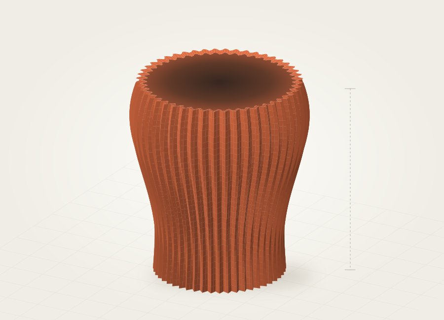
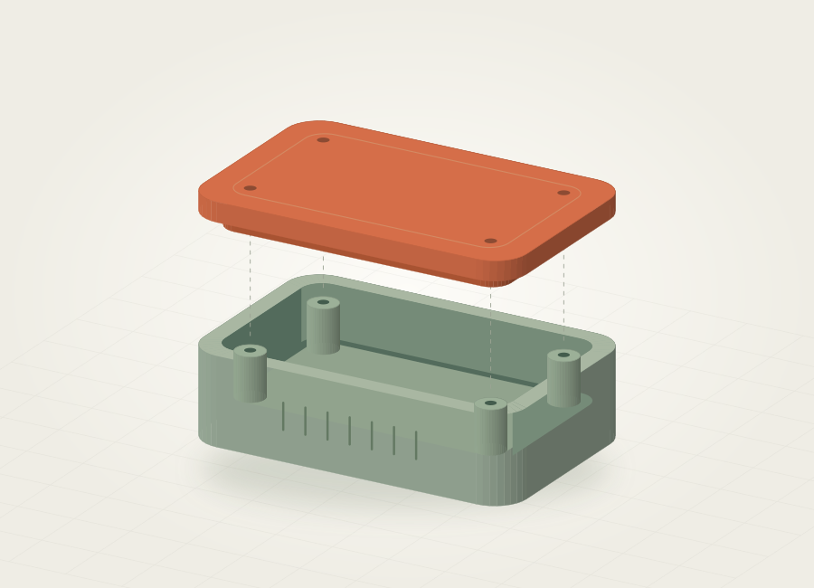

FORMA & ARREDO/01
Vaso Onda
Una superficie ritmata da scanalature, tra geometria e oggetto d’arredo.
Concept dimostrativo Esplora il conceptUna raccolta dedicata a modellazione, prototipazione e stampa 3D.
Concept da esplorare, una forma alla volta.
Prova “vaso”, “scrivania” o “stampa 3D”. Puoi combinare la ricerca con i filtri.

Una superficie ritmata da scanalature, tra geometria e oggetto d’arredo.
Concept dimostrativo Esplora il concept
Un concept da scrivania che esplora appoggio, incastri e semplicità d’uso.
Concept dimostrativo Esplora il concept
Volumi, aperture e parti da assemblare: uno studio su un piccolo involucro.
Concept dimostrativo Esplora il conceptProva un’altra parola chiave oppure rimuovi i filtri per vedere tutti i progetti.
Questi concept e le relative illustrazioni sono dimostrativi: mostrano l’impostazione del portfolio e saranno sostituiti con i progetti reali di Silve.